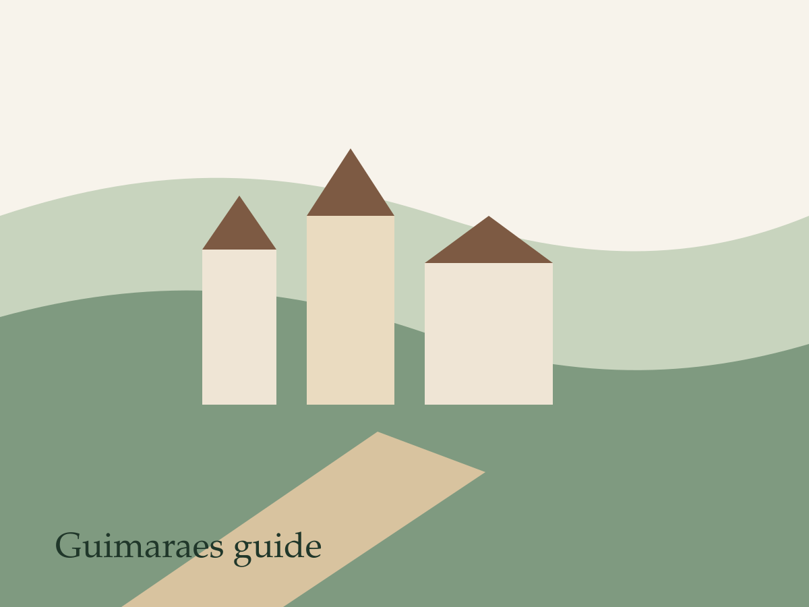
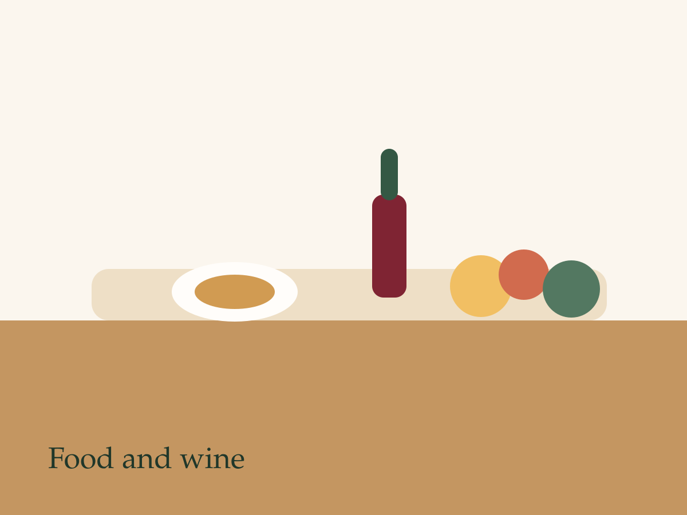

Show how easy a short stay can feel
Guides to Guimaraes, nearby villages, and simple day plans help couples and short-stay guests picture an immediate trip.
Martins journal
The journal is here to attract future guests, answer planning questions, and show why a bungalow stay near Guimaraes feels richer when paired with the right local experiences.
Plan by interest
The strongest accommodation blogs do not just describe the property. They help the right traveller imagine a full trip.
Guides to Guimaraes, nearby villages, and simple day plans help couples and short-stay guests picture an immediate trip.
Food and wine posts give visitors an emotional reason to book and help the destination feel distinctive instead of generic.
Stories about quiet mornings, seasonal routines, and longer stays can attract guests who want more than a quick overnight stop.
Starter posts
Each article is written to do more than fill space. They help guests imagine the area, trust the local knowledge behind the stay, and move closer to sending an enquiry.

An introduction that connects the mood of the retreat to the kind of slower, more thoughtful stay many guests are searching for.
Read article
A destination article that helps future guests picture their days around the bungalow before they ever contact you.
Read article
A food-led example that adds personality to the region and helps the destination feel more emotionally specific.
Read articleFrom reading to booking
The blog attracts visitors, but every useful article should still make it simple to move into a real availability conversation.